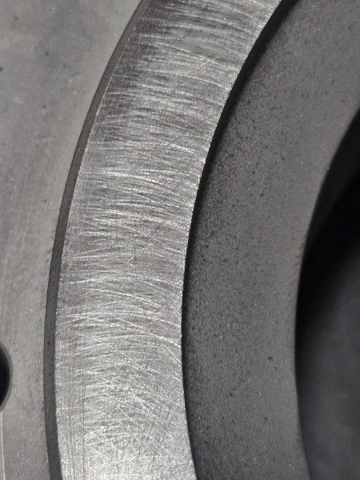
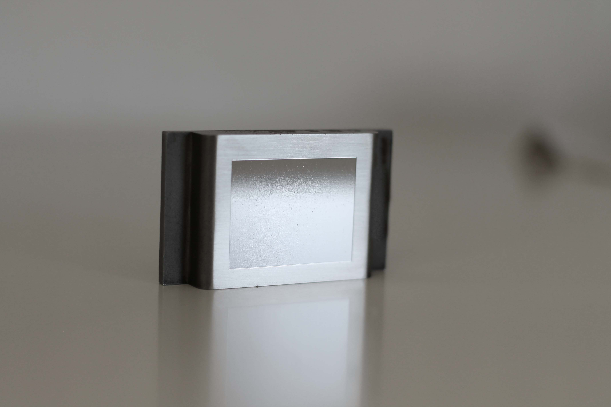
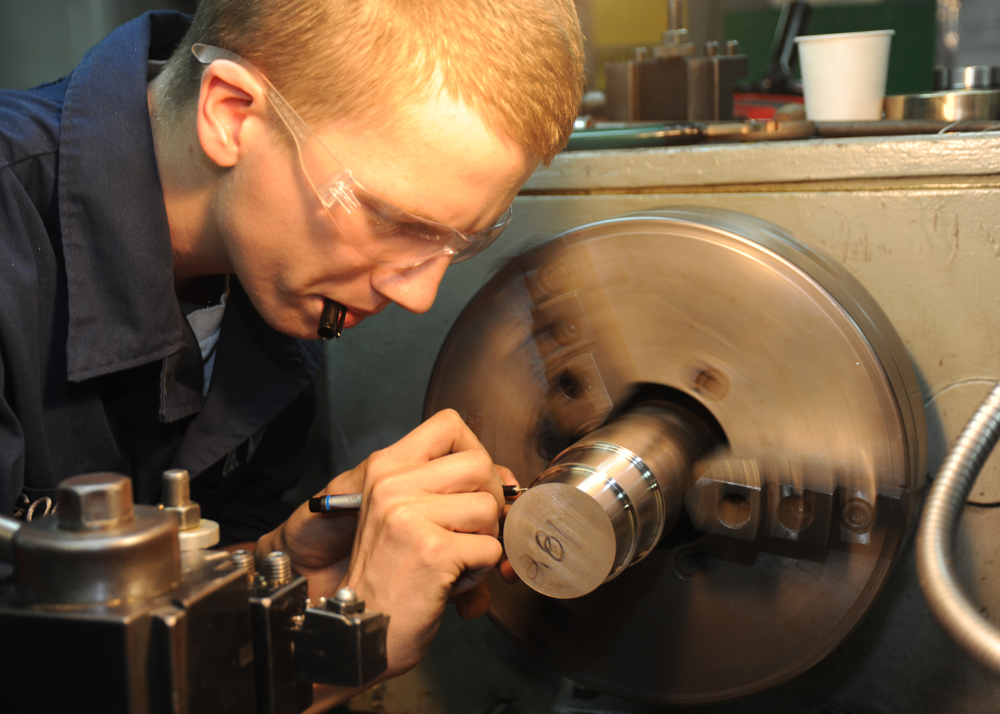
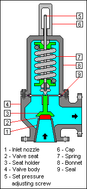
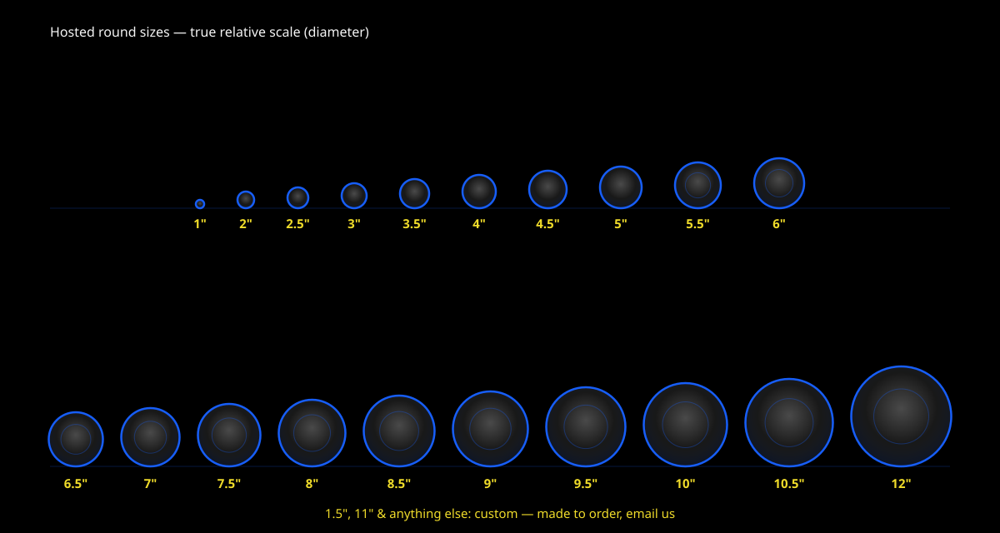

Products
Laps & Paste, Made to Spec
Three product lines, every size custom-cut. Quote in a minute with the configurator.
Frosted Glass Laps — ground / etched
The workhorse. A matte, micro-textured surface that grips lapping paste and slurry and cuts fast, evenly, and predictably from coarse stock removal to pre-polish. Use frosted for every grinding stage from 320 through 1000 grit.
| Grit range | 320 · 400 · 600 · 800 · 1000 (select at order; matched paste available) |
|---|---|
| Shapes | Round (by diameter) · Square (by side) · Rectangle (length × width) |
| Sizes | Hosted 1"–12" (see the size chart): 1", 2", 2.5", 3", 3.5", 4", 4.5", 5", 5.5", 6", 6.5", 7", 7.5", 8", 8.5", 9", 9.5", 10", 10.5", 12". Anything else — 1.5", 11", larger — is custom, made to order and quoted by email. |
| Thickness | 1/4" (6 mm) · 3/8" (10 mm) · 1/2" (13 mm) · 3/4" (19 mm) · 1" (25 mm) |
| Best for | Flattening, sizing, shaping: gun parts, valve seats/nozzles, knife blanks, stone backs, glass edges, fixture faces |
Clear Glass Laps — polished
Optically clear, polished glass for the final stages. A perfectly smooth lap carries polishing compound (cerium oxide, tin oxide, nano-crystalline lapping compound) without leaving a scratch pattern — the stage between "flat" and "you can see your face in it."
| Stages | Post-1000-grit polishing: fine compound, pre-finishing, final polish |
|---|---|
| Shapes | Round (by diameter) · Square (by side) · Rectangle (length × width) |
| Sizes | Same hosted 1"–12" list as frosted (custom by email) — pair sizes so stages transfer directly |
| Thickness | 1/4" (6 mm) · 3/8" (10 mm) · 1/2" (13 mm) · 3/4" (19 mm) · 1" (25 mm) |
| Best for | Optics, watch crystals, lens blanks, nozzle faces, art glass, display pieces |
Lapping Paste — the supply line
NanoTech diamond-equivalent lapping paste: matched abrasive for every grit stage, in tins sized from single jobs to full shops. Add it to any lap order in the configurator and it ships together.
| Grits | 320 · 400 · 600 · 800 · 1000 (fine nano-crystalline compounds available on request) |
|---|---|
| Tin sizes | Small (100 g) · Standard (250 g) · Shop (500 g) |
| Use with | Frosted laps for grinding stages; a few drops of oil or water as carrier, spread thin |
Finishing Ladder Kit — 1000 · 1500 · 2000 · 4000
Nano-crystalline lapping compound in four focused grits: 1000 fine lapping, 1500 first pre-polish, 2000 pre-polish, 4000 mirror polish. The kit that finishes the job the frosted 320–1000 laps start. Every "assortment" on the market is sharpening-oriented low-grit (400–1200) or a random 8-grit dump — nobody sells a bulk kit aimed at the finishing end. So we do.
- 1000Fine lapping
- 1500First pre-polish
- 2000Pre-polish
- 4000Mirror polish
| Finishing Ladder Kit | 1000 + 1500 + 2000 + 4000 grit, 4 syringes — $XX per kit |
|---|---|
| Bulk syringes (repeat any grit) | 10g — $XX · 20g — $XX (1000 / 1500 / 2000 / 4000 grit) |
| Repeat-grit multipacks (shop) | 5× same grit — $XX · 10× same grit — $XX |
| Volume | 5+ kits: volume pricing — ask us in the configurator notes, quoted by email |
Typical retail you'll see elsewhere (market anchors — not our prices)
| Economy 5g single-grit syringes | Competitor diamond-grade pastes retail ~$11 each, single grits 320–10000 (Rubble Rock & Gem) — our diamond-equivalent paste is the finishing ladder NanoTech sells as a kit, which none of them offer. |
|---|---|
| Assorted syringe sets | TechDiamondTools: 3-syringe $16–22 · 5-syringe $28–34.50 · 12-syringe $63–78 (mixed/sharpening grits, not a finishing ladder) |
| Lapping film analog | 6×9 in, 25-sheet packs ~$32 (Gesswein catalog); major-brand lapping film packs similar |
Glass laps for safety & relief valve nozzles
A leak-proof metal-to-metal seat on a safety relief valve — spring-loaded pop-off valves, full-bore relief valves, cooling-water safety valves — depends on a true-flat nozzle face, seat, and disc. Lapping compound on a flat glass lap restores those faces to seal. We make glass laps in the standard sizes that line up with those valves, so you can lap the nozzle, seat, and disc faces yourself. The specs below are the valve sizes our laps are cut to match; the photos show the real parts and the before/after surface a true-flat lap produces.
Relief valve sizes our laps match
Most safety relief valves are built to API 526 (the standard for spring-loaded pressure relief valves) and carry a standard orifice letter. Engineers size to the next-larger letter; the table below maps those standard sizes to the lap dimensions that lap the nozzle, seat, and disc faces to seal. DN (metric) sizes shown are the nominal pipe sizes you'll see on the flange.
| Orifice | Effective area | Typical inlet / outlet | Common DN |
|---|---|---|---|
| 1D2 | 0.110 in² (71 mm²) | 1" / 2" | DN25 |
| 1E2 | 0.196 in² (126 mm²) | 1" / 2" | DN25 |
| 1F2 | 0.307 in² (198 mm²) | 1-1/2" / 2" | DN40 |
| 1G3 | 0.503 in² (325 mm²) | 1-1/2" / 3" | DN40 |
| 1H3 | 0.785 in² (506 mm²) | 1-1/2" / 3" | DN40 |
| 2J3 | 1.287 in² (830 mm²) | 2" / 3" | DN50 |
| 3K4 | 1.838 in² (1,186 mm²) | 3" / 4" | DN80 |
| 3L4 | 2.853 in² (1,841 mm²) | 3" / 4" | DN80 |
| 4M6 | 3.60 in² (2,323 mm²) | 4" / 6" | DN100 |
| 4N6 | 4.34 in² (2,800 mm²) | 4" / 6" | DN100 |
| 4P6 | 6.38 in² (4,116 mm²) | 4" / 6" | DN100 |
| 6Q8 | 11.05 in² (7,129 mm²) | 6" / 8" | DN150 |
| 6R8 | 16.00 in² (10,323 mm²) | 6" / 8" | DN150 |
| 8T10 | 26.00 in² (16,774 mm²) | 8" / 10" | DN200 |
DN reference: DN25 = 1" · DN40 = 1-1/2" · DN50 = 2" · DN80 = 3" · DN100 = 4" · DN150 = 6" · DN200 = 8". Send your valve's orifice letter, DN size, and set pressure in the quote notes and we'll match the lap to it.
Damaged surface → freshly lapped
Left is a scored, scuffed seating surface — the kind of face that leaks. Right is the same class of face after it's lapped true on glass: flat, smooth, and ready to seal. This is the difference a true-flat lap makes.



Disc and nozzle faces are lapped in pairs: frosted 320–600 to true, 1000 to refine, clear lap plus 2000/4000 compound to finish.
Small brass/bronze nozzles and disc faces: a 2"–4" round frosted lap on a flat bench, light pressure, figure-8, check with a straightedge.

The seat (nozzle top) and disc face lap against the glass; this is the classic spring-loaded seat geometry reseated by lapping.
- navy-valve-seat.jpg — U.S. Navy (public domain), photo by MCS2 Christopher Dollar.
- valve-dn25.jpg — © RomanM82, CC BY-SA 4.0 via Wikimedia Commons.
- valve-schematic.png — © Mbeychok, CC BY-SA 3.0 via Wikimedia Commons (generic relief-valve cross-section, not a manufacturer diagram).
- surface-damaged.jpg — CC0 (public domain) via Wikimedia Commons.
- surface-lapped.jpg — © Bestemrc, CC BY-SA 4.0 via Wikimedia Commons.
Why not Lapmaster?
The name people search is Lapmaster Wolters — a fine company, doing a different job. Here's the honest comparison, in plain text:
- Industrial B2B machinery, not consumables for your bench. Lapmaster Wolters (lapmaster-wolters.com) sells machines, contract lapping services, and aluminum plates.
- Quote-only consumables, no published prices. Their consumables page is "Inquiries" — you email and wait. Ours is one form and one click.
- They don't sell glass laps. Aluminum plates are for their machines. Glass — flat, rigid, re-flattenable, sized to your part — is exactly what NanoTech makes.
- No consumer finishing kit. Nobody (them included) sells a focused 1000/1500/2000/4000 bulk lapping paste kit. The Finishing Ladder Kit fills that gap.
NanoTech's angle in one line: one-click quote flow + glass laps + a paste kit no one else sells.
Shipping & handling
UPS or PirateShip, with tracking
Shipped via UPS or PirateShip, with tracking — tracking number by email the moment your order leaves the shop.
Domestic, fast
Ships within a few business days of quote acceptance across the US. Custom sizes are made to order and may take longer — noted in the quote.
Transit damage covered
Edge chip or break in shipping? Photograph it, email us, and the lap is replaced — no argument, no claim dance.
Choosing size & thickness

- Round by diameter: the lap should fully cover the largest face you'll work, with room for figure-8 paths. 4"–6" for hand parts work, 8"–12" for plates and multi-up runs.
- Rectangles: order length × width to match the part footprint (barrel lugs, rails, blanks). Square = one side dimension.
- Thickness: 1/4" for light hand work; 3/8"–1/2" general shop; 3/4"–1" for machine use, heavy parts, or multi-lap stacks — rigidity is what keeps flatness flat.
- Buy the grit ladder: customers who order 320 → 600 → 1000 → clear finish fastest, because each step starts on a true surface.